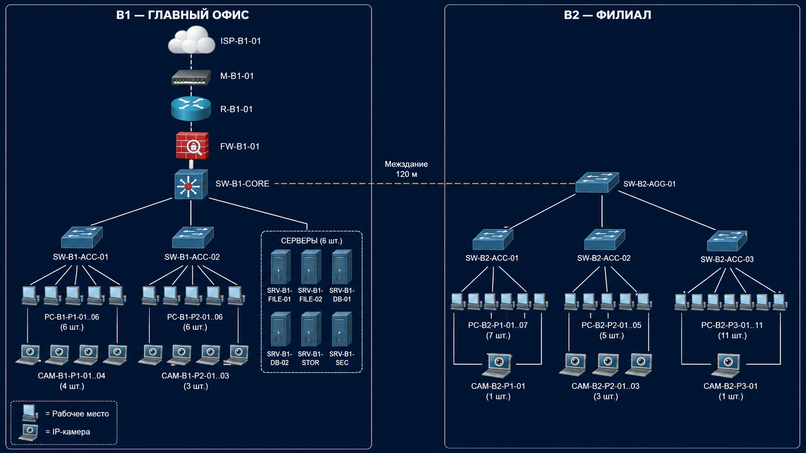
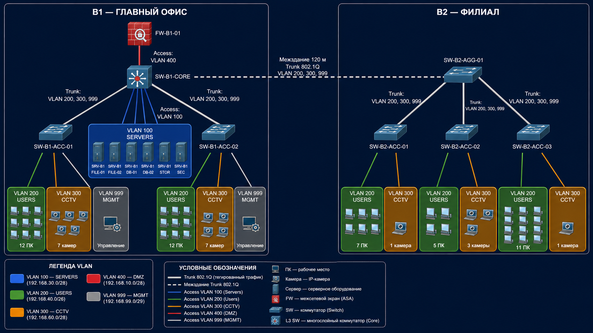
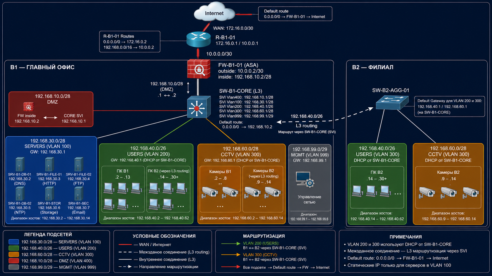
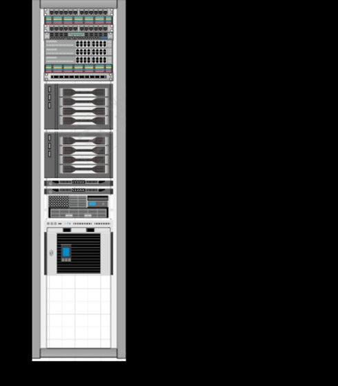
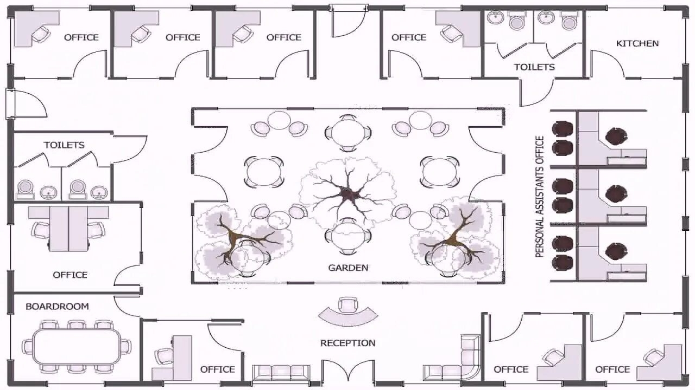
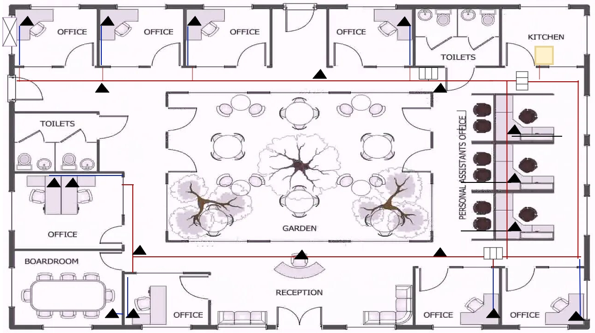
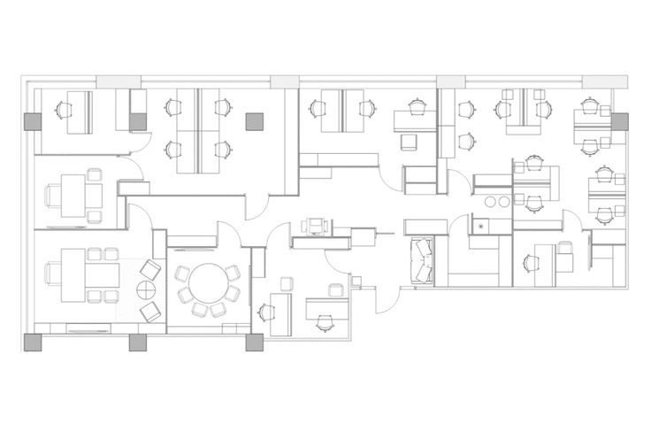
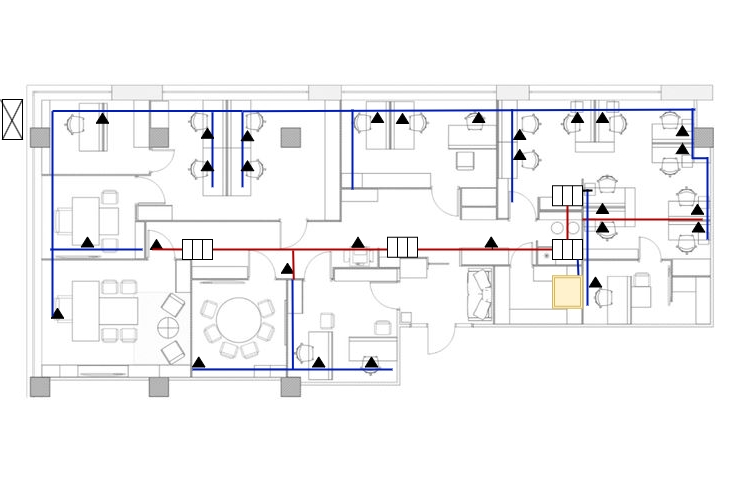

1 ПРОЕКТНАЯ ЧАСТЬ
1.1 Описание архитектуры сети
Сеть построена по двухуровневой иерархической архитектуре: уровень ядра (L3-коммутатор) и уровень доступа (коммутаторы доступа в настенных ТКШ). Межсетевой экран UserGate расположен между L3-коммутатором, DMZ-сегментом и выходом в Интернет, образуя трёхзонную схему защиты: WAN — DMZ — LAN.
Главное здание B1 имеет выход в Интернет через UserGate. Филиал B2 связан с главным зданием через защищённый VPN-канал; самостоятельного выхода в Интернет филиал не имеет. Маршрутизация между VLAN осуществляется на L3-коммутаторе посредством SVI-интерфейсов.
1.2 Выбор активного оборудования
Таблица 2 — Активное оборудование головного офиса (B1)
| Наименование | Модель | Кол-во | Назначение |
|---|---|---|---|
| Межсетевой экран (реальный) | UserGate F100 | 1 | МЭ, DMZ, VPN-сервер, выход в Internet |
| МЭ (в Cisco PT) | Cisco ASA 5505 | 1 | Моделирование функций UserGate |
| L3-коммутатор ядра | MikroTik CRS354-48G-4S+2Q+ | 1 | Маршрутизация между VLAN (SVI), ядро сети |
| Коммутатор доступа B1 (ч.1) | D-Link DGS-1210-28MP | 1 | 6 РМ + 4 камеры PoE, часть 1 |
| Коммутатор доступа B1 (ч.2) | D-Link DGS-1210-28MP | 1 | 6 РМ + 3 камеры PoE, часть 2 |
| ИБП | Systeme Electric SRT 5000 | 1 | Резервное питание стойки 42U |
| Файловый сервер | Dell PowerEdge T360 | 2 | Хранение общих файлов |
| Сервер БД | Dell PowerEdge R360 | 2 | Базы данных |
| Сервер хранения данных | Dell PowerEdge R730xd | 1 | СХД 500 ТБ |
| Сервер безопасности | Dell PowerEdge T160 | 1 | Видеонаблюдение, контроль доступа |
Таблица 3 — Активное оборудование филиала (B2)
| Наименование | Модель | Кол-во | Назначение |
|---|---|---|---|
| Коммутатор агрегации B2 | MikroTik CRS326-24G-2S+RM | 1 | Агрегация трафика филиала, uplink к B1 |
| Коммутатор доступа B2 (ч.1) | D-Link DGS-1210-28P | 1 | 7 РМ + 1 камера PoE, часть 1 |
| Коммутатор доступа B2 (ч.2) | D-Link DGS-1210-28P | 1 | 5 РМ + 3 камеры PoE, часть 2 |
| Коммутатор доступа B2 (ч.3) | D-Link DGS-1210-28P | 1 | 11 РМ + 1 камера PoE, часть 3 |
| ИБП | Systeme Electric SRT 3000 | 1 | Резервное питание шкафа 15U |
1.3 Выбор пассивного оборудования
Таблица 4 — Пассивное оборудование
| Наименование | Характеристика | Количество | Назначение |
|---|---|---|---|
| Кабель UTP | Cat.5e, U/UTP 4×2×0,52 | ~1 600 м | Горизонтальные линии B1 и B2 |
| Розетка телекоммуникационная | RJ-45, Cat.5e, 2 порта | 47 шт. | Рабочие места и камеры |
| Патч-панель 24 порта | 19″, Cat.5e, 1U | 5 шт. | По одной на каждый настенный ТКШ |
| Патч-панель 48 портов | 19″, Cat.5e, 2U | 1 шт. | Стойка B1 (серверная) |
| Стойка серверная | 19″, 42U, напольная | 1 шт. | Серверная B1 |
| Шкаф настенный | 19″, 9U–12U | 5 шт. | По одному на часть B1(×2) и B2(×3) |
| Кабель-канал ПВХ | 40×25 мм | ~640 м | Горизонтальные трассы в помещениях |
| Лоток перфорированный | 100×50 мм | ~120 м | Магистральные трассы по коридорам |
1.4 Маркировка оборудования и кабельных линий
Маркировка выполнена в соответствии с ГОСТ Р 58468-2019. Формат маркировки кабельных линий: UTP-Cat5e_[устройство]-[здание]-[сегмент]-[номер].
Таблица 5 — Маркировка активного оборудования
| Оборудование | Маркировка |
|---|---|
| Главный офис (B1) | |
| Стойка ТКШ 42U | RACK-B1-01 |
| L3-коммутатор ядра | SW-B1-CORE |
| Коммутатор доступа, часть 1 | SW-B1-ACC-01 |
| Коммутатор доступа, часть 2 | SW-B1-ACC-02 |
| МЭ UserGate / Cisco ASA | FW-B1-MAIN |
| Серверы (файловые) | SRV-B1-FILE-01, SRV-B1-FILE-02 |
| Серверы (базы данных) | SRV-B1-DB-01, SRV-B1-DB-02 |
| Сервер хранения данных | SRV-B1-STOR |
| Сервер безопасности | SRV-B1-SEC |
| ИБП | UPS-B1-01 |
| Филиал (B2) | |
| Шкаф настенный 15U | RACK-B2-01 |
| Коммутатор агрегации | SW-B2-AGG |
| Коммутатор доступа, часть 1 | SW-B2-ACC-01 |
| Коммутатор доступа, часть 2 | SW-B2-ACC-02 |
| Коммутатор доступа, часть 3 | SW-B2-ACC-03 |
| ИБП | UPS-B2-01 |
1.5 Кабельный журнал
Кабельный журнал содержит 60 линий: 40 линий в главном здании B1 и 20 линий в филиале B2. Подробный кабельный журнал представлен в Приложении В.
1.6 Схемы сети L1, L2, L3
Схемы выполнены в Cisco Packet Tracer 6.2 Student Version и представлены ниже.

Рисунок 1 — Схема сети L1 (физический уровень)

Рисунок 2 — Схема сети L2 (канальный уровень, VLAN)

Рисунок 3 — Схема сети L3 (сетевой уровень, IP-маршрутизация)
1.7 Фасад телекоммуникационного шкафа
В главном здании B1 установлена напольная стойка 42U, содержащая всё активное и серверное оборудование. Порядок размещения: сверху — пассивное коммутационное оборудование (патч-панели), далее — активное сетевое оборудование, ниже — серверы, в нижней части — ИБП.

Рисунок 4 — Фасад ТКШ главного офиса B1 (стойка 42U)
1.8 Планы зданий
Ниже представлены поэтажные планы главного здания B1 и филиала B2 — исходные и с проложенными кабельными трассами СКС.

Рисунок 5 — Исходный план главного здания B1

Рисунок 6 — План главного здания B1 с проложенной СКС

Рисунок 7 — Исходный план филиала B2

Рисунок 8 — План филиала B2 с проложенной СКС